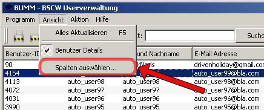
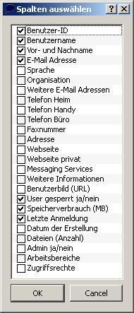
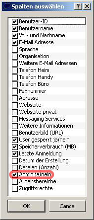

Spalten auswählen

1. Hier können Sie die aktuell ausgewählten Spalten sehen

2. Unter diesem Menüpunkt können Sie neue Spalten auswählen.
 
3. Links sehen sie die Spalten, die zu Beginn ausgewä waren. Rechts daneben sehen sie die neue Auswahl.

4. Hier können Sie die erweiterte Auswahl sehen.